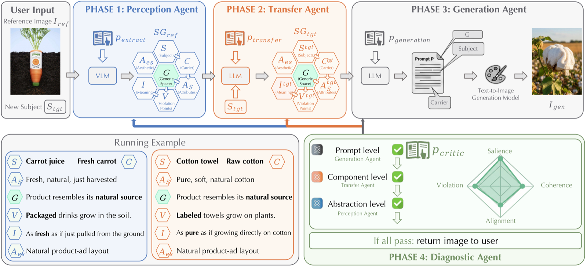
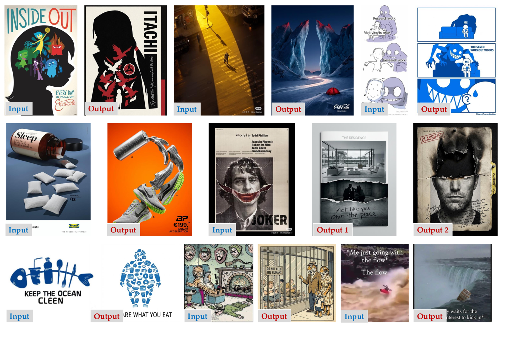
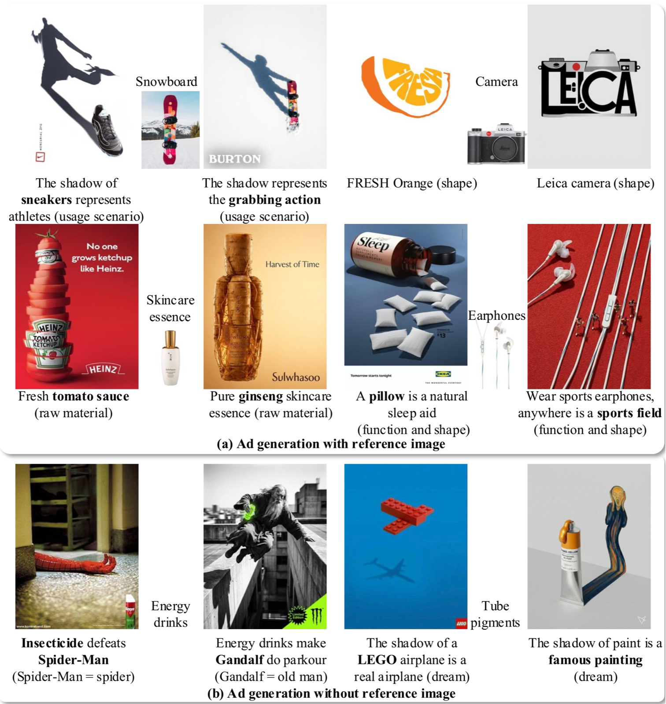
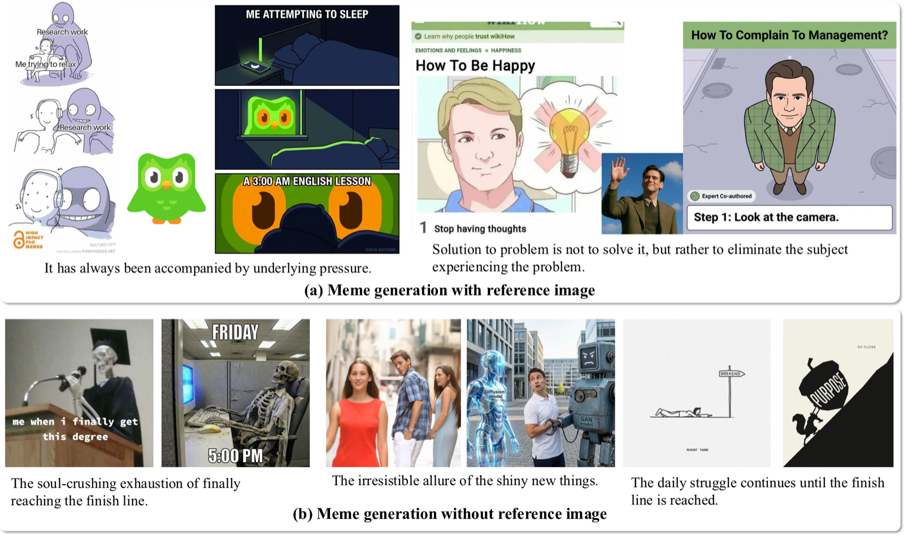
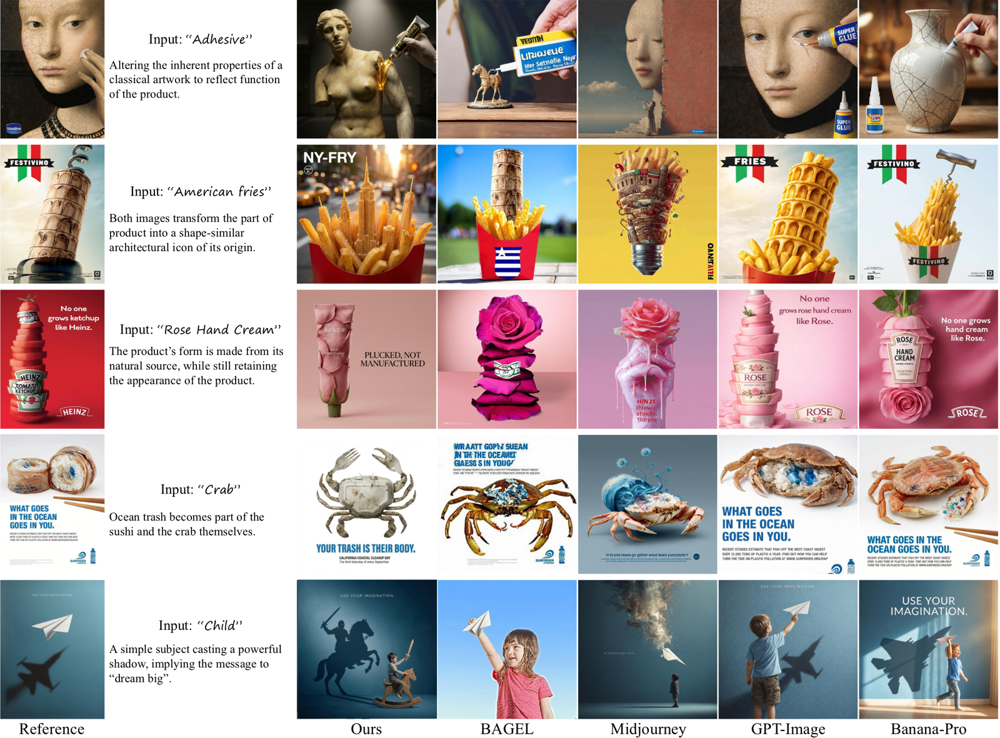

01Abstract
A visual metaphor constitutes a high-order form of human creativity, employing cross-domain semantic fusion to transform abstract concepts into impactful visual rhetoric. Despite the remarkable progress of generative AI, existing models remain largely confined to pixel-level instruction alignment and surface-level appearance preservation, failing to capture the underlying abstract logic necessary for genuine metaphorical generation. To bridge this gap, we introduce the task of Visual Metaphor Transfer (VMT), which challenges models to autonomously decouple the “creative essence” from a reference image and re-materialize that abstract logic onto a user-specified target subject. We propose a cognitive-inspired, multi-agent framework that operationalizes Conceptual Blending Theory (CBT) through a novel Schema Grammar (𝒮𝒢). This structured representation decouples relational invariants from specific visual entities, providing a rigorous foundation for cross-domain logic re-instantiation. Our pipeline executes VMT through a collaborative system of specialized agents: a perception agent that distills the reference into a schema, a transfer agent that maintains generic space invariance to discover apt carriers, a generation agent for high-fidelity synthesis, and a hierarchical diagnostic agent that mimics a professional critic, performing closed-loop backtracking to identify and rectify errors across abstract logic, component selection, and prompt encoding. Extensive experiments and human evaluations demonstrate that our method significantly outperforms state-of-the-art baselines in metaphor consistency, analogy appropriateness, and visual creativity.
02Method
A visual metaphor as a 7-tuple Schema Grammar — hover each element
G is preserved; C, V, I are re-instantiated for the new subject.

Perception Agent
Distills the reference image into SG_ref, separating surface entities from the abstract relational logic that makes the metaphor work.
Transfer Agent
Keeps the Generic Space G invariant while profiling the new subject, discovering an apt carrier, and redesigning the violation — yielding SG_tgt.
Generation Agent
Compiles SG_tgt into a stylistically rigorous text-to-image master prompt and synthesizes the image.
Diagnostic Agent
Critiques subject salience, violation realization, relational coherence and meaning alignment — then triggers hierarchical backtracking.
Closed-loop hierarchical backtracking (up to τ = 5 iterations)
03Results




VLM-as-judge scores on 126 curated visual metaphors (Gemini-3-pro judge, 10-point scale — similar margins under GPT-5.2 and Claude-4.5)
Metaphor Consistency
Analogy Appropriateness
Conceptual Integration
Preferred by human raters in > 60% of pairwise comparisons against every baseline (100 participants).
04Use it as an Agent Skill
The full method ships as a self-contained agent skill — the four paper prompts orchestrated by a closed-loop workflow that Codex, Claude Code, or Cursor can execute directly. No training, no deployment.
- Clone the repo and copy
visual-metaphor-transfer/into your agent's skills directory (~/.codex/skills/,~/.claude/skills/, or~/.cursor/skills/). - Start a new conversation and upload a reference image.
- Ask for a transfer — the agent runs Perception → Transfer → Generation → Diagnosis and iterates until the metaphor lands.
❯
◆ Phase 1 · Perception — extracting SG_ref … done
◆ Phase 2 · Transfer — G invariant, new carrier found … done
◆ Phase 3 · Generation — master prompt → image … done
◆ Phase 4 · Diagnosis — all four constraints … PASS ✓
05BibTeX
@inproceedings{xu2026beyondpixels,
title = {Beyond Pixels: Visual Metaphor Transfer via Schema-Driven Agentic Reasoning},
author = {Xu, Yu and Zhang, Yuxin and Gao, Lin and Deussen, Oliver and Lee, Tong-Yee and Tang, Fan},
booktitle = {SIGGRAPH Asia 2026 Conference Papers},
year = {2026}
}